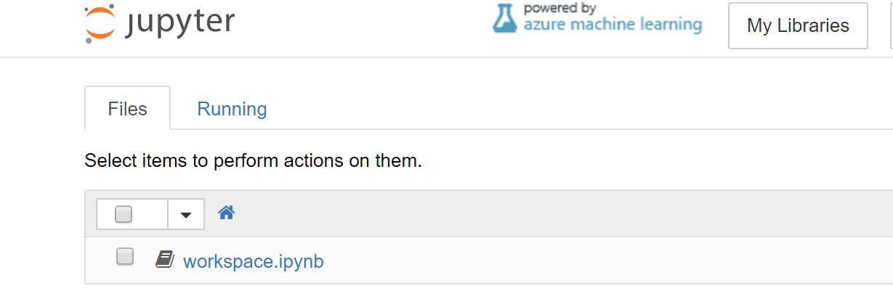
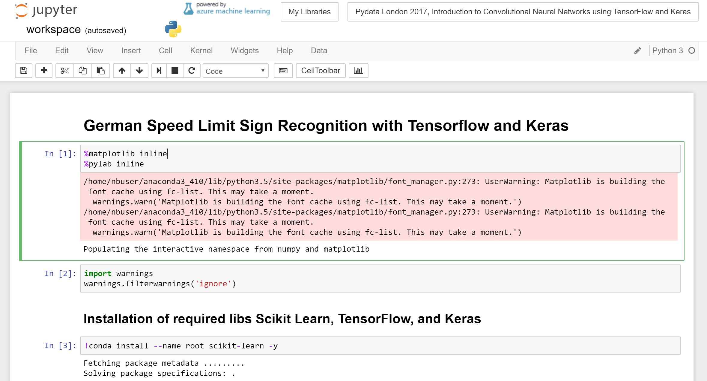

Oliver Zeigermann / @DJCordhose
Slides: http://bit.ly/pydata-conv
Big Kudos to Traffic Sign Recognition with TensorFlow by Waleed Abdulla for providing the initial idea and many of the functions used to prepare and display the images
There are two ways of following along
When you see this
Click on workspace.ipynb to go to this
This is the view we will work in
The rest of the talk will be guided by notebooks